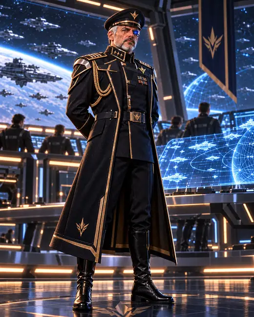
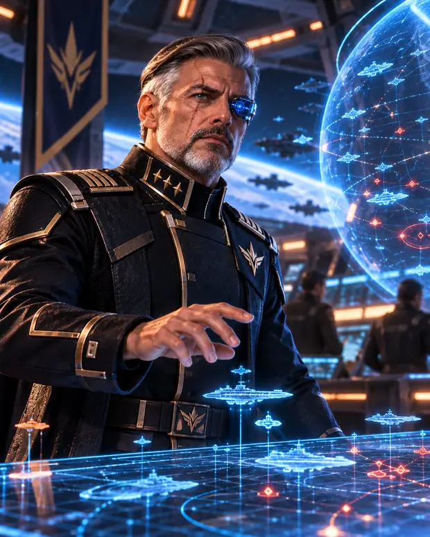
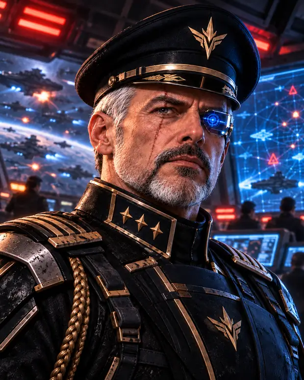

Внешность
Возрастной образОколо 58–65 лет.
ТелосложениеВысокий, сухой, подтянутый.
ЛицоРезкие возрастные линии, седая борода, шрам справа.
КибернетикаПравый глаз — военный оптический имплант с холодным синим светом.
Командующий, который знал о неизвестном сигнале раньше остальных и отправил Andygen на Mercury, не раскрыв всей картины. Не злодей — человек, привыкший принимать решения, цена которых становится понятна позже.



Vale никогда не должен выглядеть нервным карьеристом или кричащим генералом. Чем опаснее ситуация, тем спокойнее он говорит.
Его ошибка — уверенность, что именно он вправе решать, сколько правды нужно знать другим.
Низкий, спокойный, взрослый голос. Опыт без хриплого клише «старого солдата».
Короткие предложения. Практически не повышает голос. В конфликте не оправдывается длинными монологами.
• Не превращать Vale в очевидного злодея или предателя.
• Не убирать шрам и кибернетический правый глаз.
• Не делать его чрезмерно массивным.
• Не перегружать форму карикатурной парадностью.